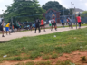
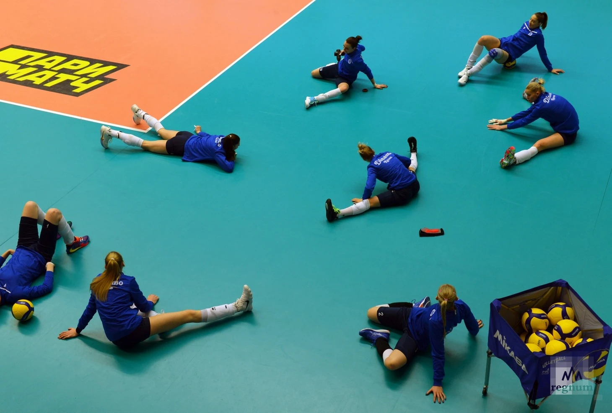

Первые шаги
Тренировки для начинающих
Регулярные короткие занятия помогают привыкнуть к мячу, освоить стойку и точнее направлять передачи.
Разминка
Перед игрой разогрейте мышцы и суставы. Начните с лёгкого движения, затем подготовьте плечи и кисти.
- Пять минут лёгкого бега или ходьбы.
- Мягкие круговые движения плечами и руками.
- Несколько приседаний и боковых шагов без мяча.
Три базовых упражнения
- Пас сверху в паре:
- держите ладони перед лбом;
- направляйте мяч разгибанием ног и рук.
- Приём снизу: соедините предплечья и направляйте мяч корпусом.
- Подача снизу: подбросьте мяч невысоко и ударьте раскрытой ладонью.
Командная тренировка
На фотографии команда отрабатывает передачи и удары. Нажмите на миниатюру, чтобы открыть большое изображение.

Начинайте с удобной нагрузки и отдыхайте между упражнениями. Если вы чувствуете боль, прекратите занятие и обратитесь за советом к тренеру.
План тренировки
| Этап | Содержание | Переход |
|---|---|---|
 Тренировка по волейболу | Разминка и подготовка к работе с мячом. | Разминка |
| Основная часть | Приём, передача и подача. | Упражнения |